Durative Actions
GIPO supports durative actions approximately equivalent to those
defined in PDDL+. This support is still being developed and is
only made available to allow researchers to experiment with
this type of domain specification. The editing and support facilities
are still far from robust but are made available to give an indication
of what might be done. The principal method for creating such
domains which we call OclPlus is by use of the History
Editor. There is at this time no
built in planner for OclPlus nor yet a translation to PDDL+. There is
however an experimental stepper for OclPlus. Other editors are aware of
OclPlus and allow editing of Fluent properties. This is true of the
basic GIPO editors with the exception of the Operator Editor but it is
not needed if the History Editor is used to create the domain
specification.
Creating an OclPlus Domain Specification
When a new domain is created using the domain properties editor the
domain is defined as being an OclPlus domain if the Domain has
Durative Actions check box is selected. If this is done the History
Editor should be started to allow the creation of the specification.
The features of OclPlus that the History Editor is required to support
are:
- to allow objects to have numeric properties,(fluents)
- to allow fluents to be tested and updated when transitions are
made
- to allow some transitions to be designated as Events
- to determine how fluent properties can trigger Events
- to allow for the creation of Processes
- to provide means of specifying how Processes are triggered by
Properties/States and Fluents of objects
- to allow processes to reference / test and update fluents in a
time dependant way.
OclPlus in the History Editor
This description assumes that the reader is already familiar with the
basic operation of the History Editor.
Numeric Properties
Fluents are properties of objects and can be defined relative
any state node for an object sort.
Right clicking on a selected state node will give in addition to the
normal options the option Fluents which if selected will bring
up the following dialog box
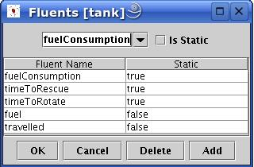
In the edit combo box the names of new fluents can be added and the
check box static allows the designer to specify whether or not
the number property being define is subject to change during planning.
In the example above we see that the fluent fuel is not
static and may change fuelConsumption is static and will
not change during the course of a plan. All fluents have the implicit
type real. Fluent property names must be unique to each object
sort.
Transition Manipulating Fluents
Transitions are allowed both to test the value of fluents belonging to
the object sort for which the transition is defined and to update them.
Right clicking on a transition node will give the option to define Fluent
Constraints which if selected will bring up the following
dialog box:
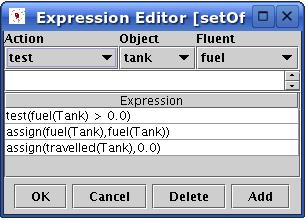
The drop down boxes provide information
- The actions to be taken relative to fluents,
test,assign,increase,decrease,scaleup and scaledown
- The objects that may be reference in this transition
- The dynamic fluents accessible from this transition
The designer must enter in the edit box an expression composed from
those elements along with references to static fluents and the numeric
operators +,-,*,/ and the relational operators < > = <= >=
The syntax for referring to a fluent value is to use the fluent
property name and as argument a variable formed from the name of the
object sort to which this fluent refers. When a complete expression is
added to the list of expressions the syntax will be checked.
Events
Events are transitions that are brought about by the change in
numeric properties and are not directly invoked by the planner. To
create an Event a normal state transition is created and on the
popup menu associated with the transition node is the option Make
Event selecting this categorises the transition node as an event
node and this is indicated by the node changing colour. Event
rountangles are coloured pink. To complete the event definition the
transition must be defined
to manipulate the numeric properties of the connected objects as
described above. As a minimum there must be a test
clause that refers to a numeric property and is associated with a process.
There should also be a process link 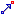 that connects from a process
node to the Event node. This link provides a visual
indication of which processes trigger which events.
Processes
Processes are created using the process tool and
positioning and naming the process in a manner similar to creating a
state node.
The testing and manipulating of fluent values is done as described
above for transition nodes using an identical dialog box. The only
difference is the the symbol #t is available to be used in
expressions and refers to elapsed time since the process starts
running. Processes must be connected as target by one or more
process links . The sources for such links must be either state nodes,
in which case it becomes a precondition of the process running that an
object of the appropriate sort is in that state,
or a transition node, in which case the process link must be
associated with a boolean property of the connected object sort
and the process will have as part of its precondition that the boolean
property be set to true.
Boolean Properties
In the property dialog associated with object states properties may be
defined as having a boolean value sort. Transition defined as
property changing transitions may then negate these values.
Transforming Property
When processes are running some of the non numeric properties of an
object may be regarded as transforming from one value to another and
hence be inaccessible. For example in a logistics style domain a truck
while the process of travelling is running may transforming its
location property and that property may not be available for inspection
while the process is running. A state node connected
to a process as source of a process link may by right clicking and
using the Transforming Property dialog have any of its defined
non-numeric properties declared as transforming. This notion
presupposes that an object prior to entering this state had a valid
value for the property and will again have a valid value when the
object leaves this state as a result of an event marking the end of the
connected process.
Property Preconditions
Property Preconditions as mention above are boolean
properties of objects that can form
preconditions to Processes. Property preconditions are set by
right clicking on the process link connecting the triggering
transition node and the process. Right clicking provides a menu item to
provide the Property Precondition dialog box in which the
available possibly relevant boolean properties are listed. The required
properties must be selected to form a precondition for the activation
of the process. The corresponding transition node must
have defined a property change for the selected boolean properties.
negating the current value of the property.
OclPlus in the Predicate Editor
The Predicate editor allows a predicate to be defined as a fluent.
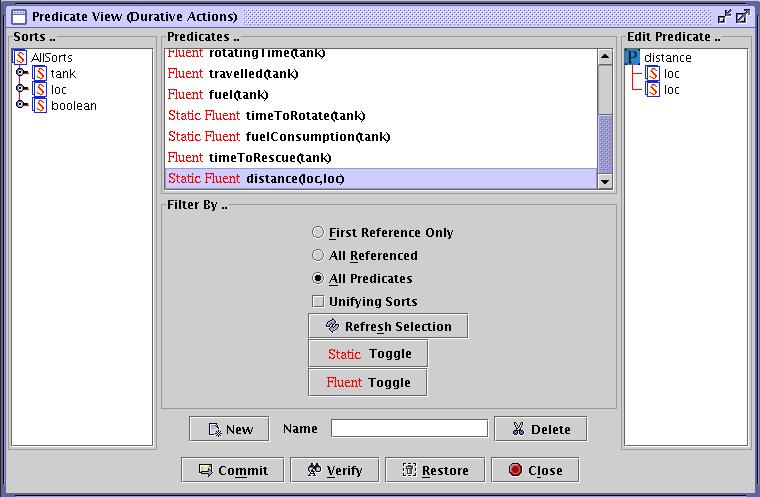
In the above screen shot we see the predicate editor in use after that
of the History Editor where most predicates have been automatically
created including most fluents. Additional fluents that need adding are
static fluents that provide values for relationships holding between
objects rather than properties of objects. An example of such a
predicate is the distance(loc,loc) predicate defined in
a logistics type domain where the numeric distance between two
locations must be provided. These static predicates may be referenced
in the fluent expressions used in transitions and processes. We see the
distance predicate being referenced in the following Fluent
Constraint dialog of a travel process.
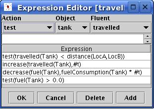
OclPlus in the Atomic Invariants Editor
In addition to defining the structure of fluent properties and
relations done in the History Editor and the Predicate editors actual
instance values must be provided in the Atomic Invariants Editor
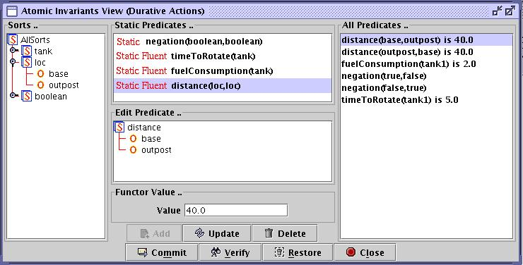
In the above screen shot the Atomic invariants edit is being used to
provide values for different instants of the distance
predicate in a logistics being given a value. The relationship
arguments base and output have been dragged on the the
instance of the predicate and the value for this instance entered into
the Functor Value edit box which will accept a simple real
value.
OclPlus in the Task Editor
The task editor works as in classical domains with the exception than
in defining initial states form
objects in problems numeric predicates Fluents must have their
values set. When an object state has been selected the predicate
arguments must be supplied as in classical domains but fluents when
right clicked allow a dialog box to be displayed to enable a value for
the fluent to be supplied. This
is shown in the following screen shot.

In the Goal state fluents can only currently be set to specific values
in a manner identical to that described above. This will be changed in
future releases to allow
test statements to allow a fluents value to be specified
in a relational statement.
OclPlus Stepper
GIPO contains an experimental stepper for OclPlus domains. The
stepper allows the planner to select actions to perform set against an
advancing time line that the the designer controls. The
stepper is described relative to a simple tank domain
where a tank can travel from
its base to an output, using fuel as it advances, if it has sufficient
fuel it may also rotate
its turret. The task is shown above in the Task Editor. All that is
required in the task is that the tank
reach the outpost but we can test if the turret can be rotated one
before the output is reached.
The static information
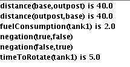
shows that the distance to the outpost is 40 units and that fuel
consumption is 2 units per time unit,
but in the task the initial fuel is only 40units, clearly the tank
cannot make it. The time taken
to rotate the turret is 5 time units and consumes 1.2 units of fuel per
time unit. WE will try to set of on the trip and start rotating the
turret at time 2 and see what happens.
The Life History diagram for the domain is shown below:
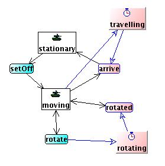
When the stepper is opened up we see the following graphic tool which
has been annotated to show the
editor elements:
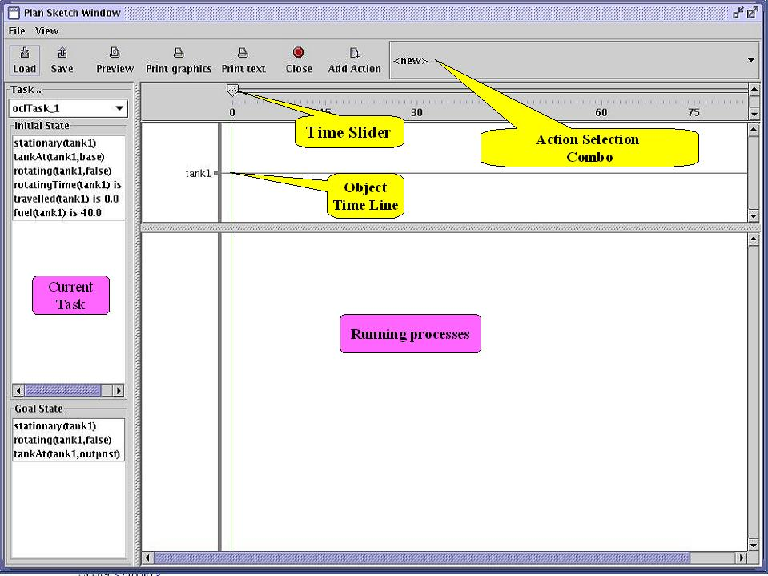
To add actions to the plan the action is selected from the comboo box
and the Add Action button pressed this opens a dialog box to
allow the action parameters to be instantiated.
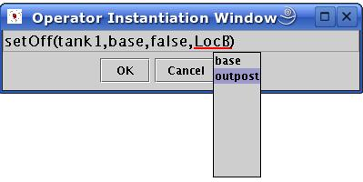
When the action is added to the canvas we are shown an icon on the time
line for the effected dynamic objects and if processes are started as a
result of adding the action to the plan a time line for the process is
added to the process canvas as shown below:
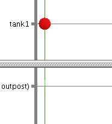
To start rotating the turret we firs drag the time slider to the
correct time which will simulate running any started processes and if
necessary fire any triggered events. below we drag the time slider to
time 2.
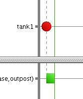 we
see the process bar for the travelling event being stretched out to
time 2. If we now add a rotate action as described above the action is
added to the object canvas and a new process time line is created for
the rotate process. In the following snapshot we have also clicked on
the rotate action icon to inspect the tank state after applying the
action but before advancing the time beyond point 2.
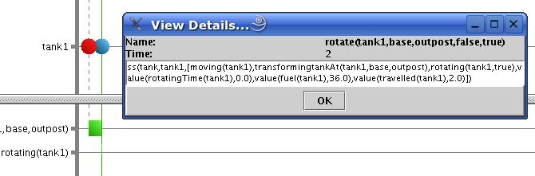
We see in OclPlus notation the state but can make out that fuel has
dropped to 35 units. We now stretch out the time line to time 8. We see
that the process of rotating is shown as completed and the end rotate
event has been fired, shown by the cross icon. Inspecting the state
after the event reveals
fuel dropped to 20 units after travelling for 7 time units.
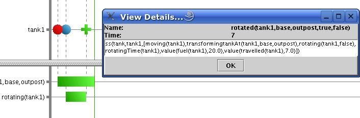
We might now complete our test by dragging the time slider for another
10 or so time units to see what happens.

We see at time 17 the travel process has terminated, the tank has run
out of fuel but no arrival event has been fired. Our tank is stuck in a
planning limbo there are no transitions out of the moving
state other than arriving and we cannot arrive if the process has
terminated. We essentially have a modelling problem we should have
defined an event for running out of fuel that would have occasioned a
transition of the tank to some other state, even if that was just an
error state.
GIPO
Document Set